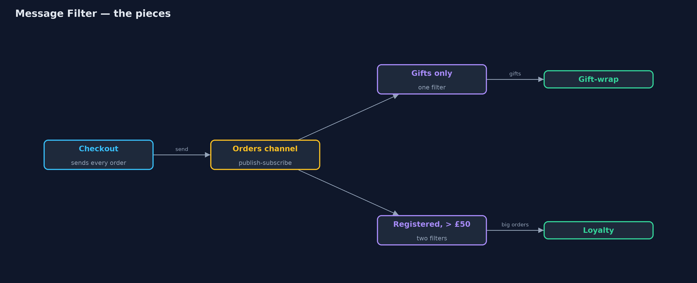
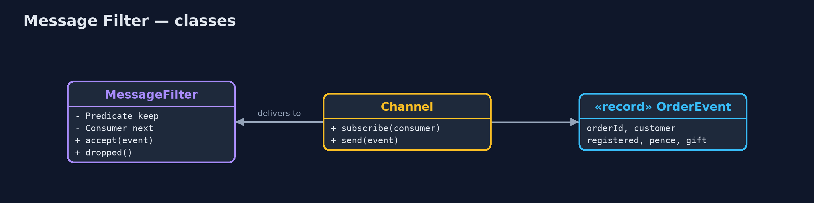
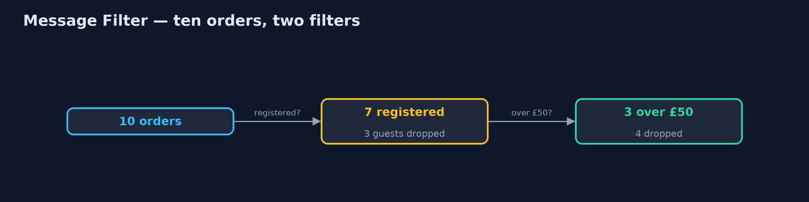
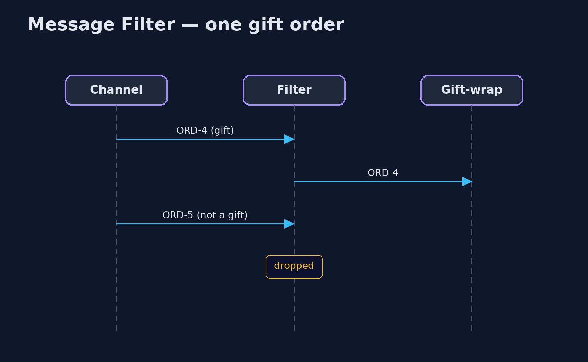

Message Filter Pattern
src/main/java/com/jk/explore/messagefilter/
├── Channel.java A publish-subscribe channel: every message sent is delivered to every subscriber
├── MessageFilter.java The pattern: stands between a channel and a receiver, and passes on only the messages that match its rule
├── MessageFilterDemo.java The five acts: every receiver gets everything, a filter in front of one receiver, chained filters, a changed rule, and the bill
├── OrderEvent.java "An order was placed": sent to every service that listens on the orders channel
└── Services.java Receivers that only care about some orders: gift wrapping and loyalty bonusesPut a filter between a channel and a receiver that passes on only the messages matching its rule, so neither the sender nor the receiver has to know about it.
Message Filter is one of the Enterprise Integration Patterns. On a publish-subscribe channel, every subscriber receives every message, even the ones it does not care about. A message filter sits between the channel and one receiver, checks each message against a rule, and passes on only the ones that match. Everything else is dropped.
The sender keeps sending everything, the receiver sees only what it wants, and the rule lives in one small, replaceable place. Filters can be chained to combine rules.
The idea in everyday terms
Think of the spam filter on your email. The world sends you everything; the filter decides what reaches your inbox. Senders do not know it exists, and you never have to open the junk. But a good spam filter does not delete mail: it puts it in a spam folder, because sometimes the rule is wrong.
The scenario
Every order the online store takes is published on an orders channel. The gift-wrap service only cares about gift orders, and the loyalty service only about registered customers spending over £50. Both were handed every order and had to open and ignore most of them, each repeating its own checks.
Run
./gradlew runThe demo tells the story in 5 acts, each printing exact numbers that the tests check:
| Act | What it shows |
|---|---|
| 1. Everything to everyone | The gift-wrap service is handed 10 orders and wraps 2: 8 deliveries it had to open and ignore. |
| 2. A filter | A gifts-only filter in front of the gift-wrap service: it receives ORD-2 and ORD-4; 8 dropped. |
| 3. Chained filters | Registered, then over £50: the loyalty service receives ORD-1, ORD-4 and ORD-6; 3 guests and 4 small orders dropped. |
| 4. A changed rule | Raising the threshold to £60 leaves ORD-1 and ORD-4; checkout and the loyalty service are unchanged. |
| 5. The bill | 15 messages were dropped across the filters and none was kept; a wrong rule would drop orders silently. |
Test
./gradlew test6 tests in DemoRunsTest, MessageFilterTest. Every number the demo prints is asserted, and nothing depends on the clock, so every run gives the same result.
Technologies and versions
| Technology | Version | Used for |
|---|---|---|
| Java | 21 | the code (toolchain set in build.gradle) |
| Gradle | 9.2.1 (wrapper) | build and run, nothing to install |
| JUnit | 5.10.2 | the tests |
| videokit | repository tool | the narrated video and animation: Piper en_US-amy-medium, speed 0.8, longer pauses (the approved amy-slow voice) |
Learning Material
| Document | What it is for |
|---|---|
| Problem statement | the situation and what the project must show |
| Prerequisites | what you need to know first |
| Message Filter, explained | the acts in prose |
| Session guide | a one-hour lesson with exercises |
| Animated walkthrough | the acts step by step, narrated |
| Spec | what this project must be true of |
The pattern in one picture
Filters sit in front of receivers, not in the sender.

Where each piece sits
A filter is just another subscriber that forwards some messages.

How the data moves
Each filter narrows the stream.

Who calls whom, in order
Passed on because it matches.

Video
video/message-filter-pattern-explained.mp4 (with .m4a audio and .srt subtitles) is built by video/build_video.sh. Rendered media is not committed.
What it costs
- Dropped means gone. Fifteen messages were dropped across the demo's filters, and none was kept anywhere.
- Silent mistakes. A wrong rule drops real orders without any error.
- Another hop. Each filter is one more step every message passes through.
When this is too much
When the receiver genuinely needs to see every message, a filter is pointless. And when many receivers need very different subsets, a content-based router, or separate channels per kind of message, may be clearer than many filters.
Where you have already met this
- Apache Camel's
filterand Spring Integration's<int:filter>. - Subscription filters in cloud messaging, such as SNS or Azure Service Bus.
- Kafka Streams'
filterstep. - Email rules and spam filters.
Where this sits
This project is in messaging-integration-patterns, next to Content-Based Router, which sends each message to one of several places instead of keeping or dropping it, and Dead Letter Channel, a home for messages that cannot be delivered.